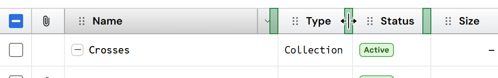
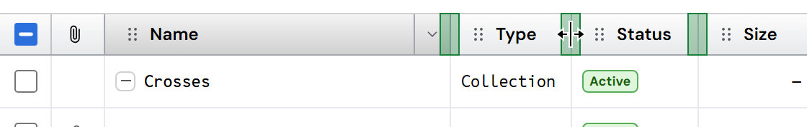
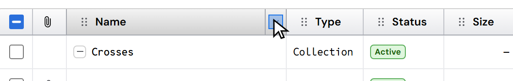
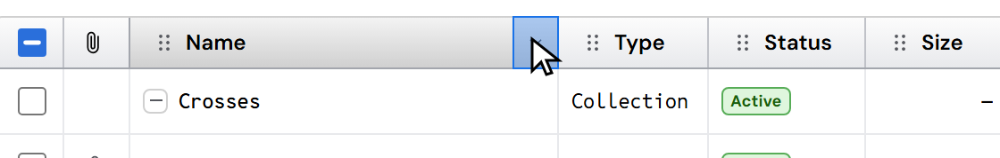

Where your mouse can grab in the grid's header
Nothing you see changes. What changes is the invisible area around two things where your mouse "catches": where the pointer turns into the resize arrows, and where a click opens the column's menu. The shaded areas below are that invisible area; the cursor shows what you would see there.
1 · Resizing a column (green: where the pointer turns into ↔)


2 · The column's menu (blue: where a click opens it)


3 · The navigation pane's divider
Unchanged: it stays exactly as it is today.
In short: you can grab a column's edge right on the line, and the whole drop-down part opens the menu. Both match Windows Explorer. The column menu's "Size to fit" and the arrow keys still resize a column too.